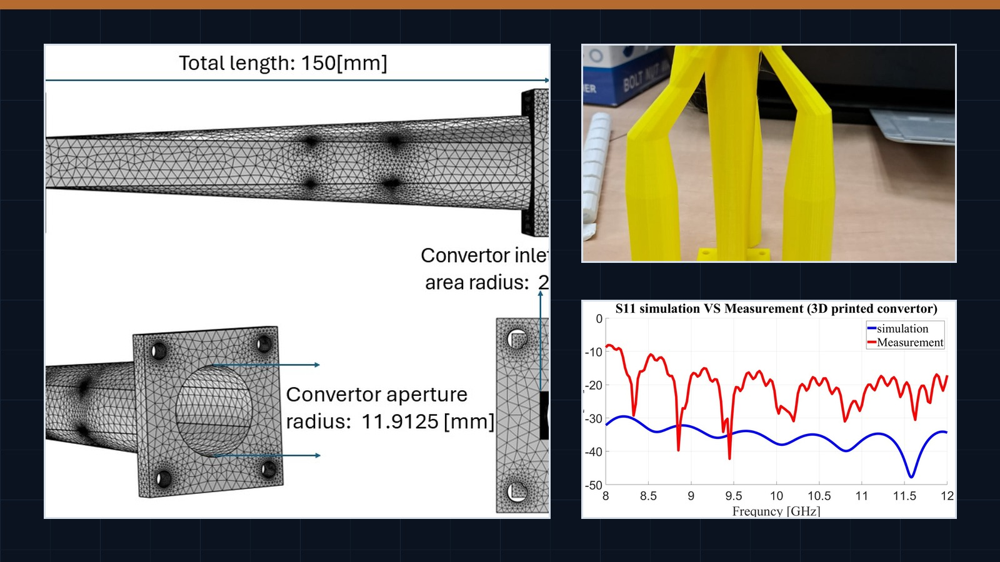
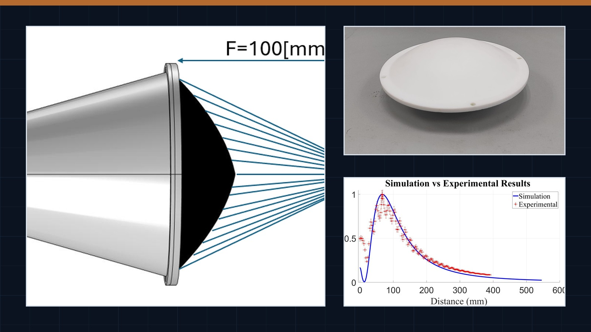
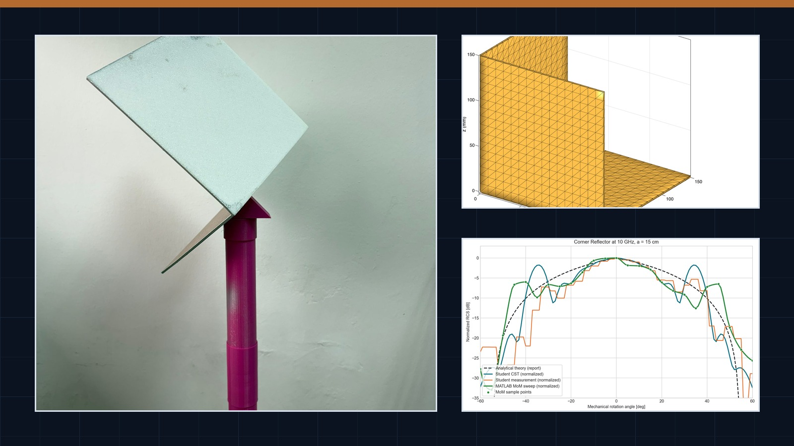
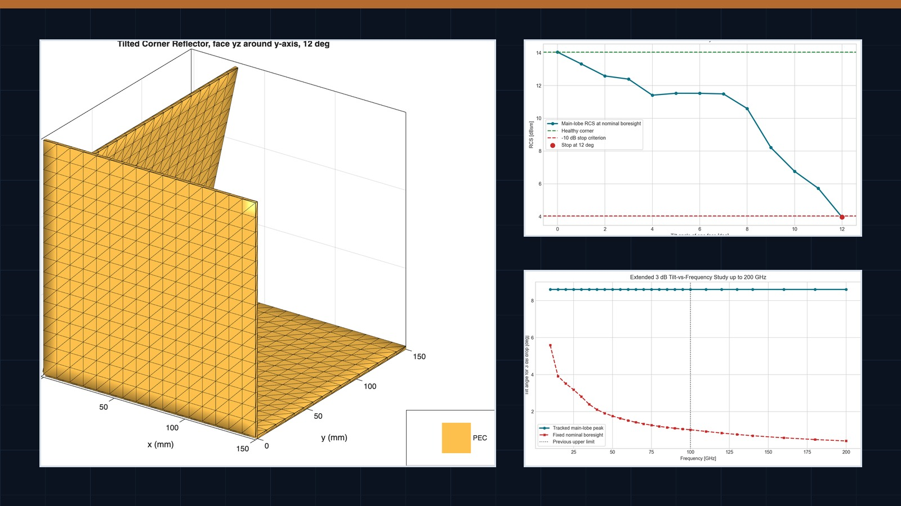

Design and feasibility
Parametric geometry, RF concept evaluation, waveguide interfaces, horn antennas, lens-assisted systems, and passive RF target studies prepared for early technical decision-making.
Applied Magnetic Systems Lab
The Applied Magnetic Systems Lab develops and evaluates RF structures, antenna systems, waveguide transitions, passive RF targets, and measurement workflows. This page gives companies and technical partners a compact view of selected capabilities, with public-safe demo packages prepared for external review.
Engineering evidence
The examples below are intended to communicate practical engineering depth: parametric modeling, printed RF hardware, waveguide integration, VNA-related measurements, radiation-pattern characterization, RCS studies, and comparison between theory, simulation, and experiment.
Parametric geometry, RF concept evaluation, waveguide interfaces, horn antennas, lens-assisted systems, and passive RF target studies prepared for early technical decision-making.
Selected examples include prototype photos, measurement-oriented workflows, radiation-pattern plots, S-parameter comparisons, and benchmark studies against analytic or simulation results.
A first contact point for companies seeking a focused technical discussion, feasibility check, design review, prototype path, or student-industry project.
Industry conversations
For companies working with antennas, RF sensing, waveguide components, special measurement setups, or printed RF structures, the lab can support early technical exploration before a full project is defined.
Selected examples
Each example is framed as a public-safe technical snapshot. The downloads are intended to support discussion, not to expose full internal project files.
Horn antenna and waveguide feed | 4 GHz
A 3D-printed horn concept for 4 GHz work with a WR229 interface, supported by measured radiation-pattern results and prototype photos.

Waveguide mode converter | 10 GHz / X-band
A published transition with printed and metal prototype evidence, geometry visuals, and return-loss comparison plots.

Lens antenna system | 10 GHz
A horn-plus-lens system that combines printed hardware with measured focusing behavior and system-level S11 comparison.

Passive RF target | 10 GHz
A trihedral corner reflector workflow with STL models, analytic and MoM comparison, and measured-data benchmarking.

Sensitivity study | 10 GHz to 200 GHz projection
A simulation-led study of how one-face tilt changes reflector response, including a high-frequency projection.
Downloads
Use these downloads as controlled, public-facing examples for external review. Replace the local links with WordPress Media Library URLs after upload.
| Package | Includes | Download |
|---|---|---|
| 4 GHz Printed Horn Demo | Summary PDF, preview images, sample radiation-pattern CSV excerpt | ZIP package |
| X-Band Mode Converter Demo | Summary PDF, geometry visuals, prototype images, S11 plot | ZIP package |
| Lens-Horn Focusing Demo | Summary PDF, geometry preview, axial-power comparison, S11 comparison | ZIP package |
| 10 GHz Corner Reflector Demo | Summary PDF, preview STL, RCS plots, sample CSV excerpt | ZIP package |
| Corner Tilt Sensitivity Demo | Summary PDF, tilt-response plots, sample sensitivity CSV excerpt | ZIP package |
Download policy: these files are intended for public viewing and demonstration. Full project files, customer-specific geometry, and production-ready packages are available only through the appropriate private workflow.
The examples on this page are a starting point for technical conversation. For companies and partners, the most useful next step is usually a short discussion around the engineering question, available data, constraints, and the kind of evidence needed for a decision.